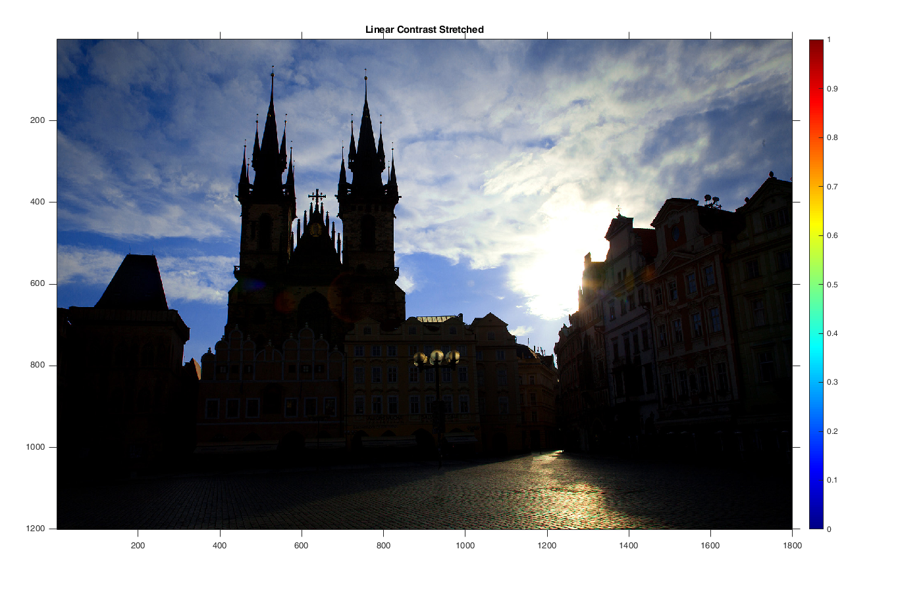

Contents
MyMainScript
tic;
img1 = imread('../data/barbara.png');
img2 = imread('../data/TEM.png');
img3 = imread('../data/canyon.png');
img4 = imread('../data/retina.png');
img4ref = imread('../data/retinaRef.png');
img4m = imread('../data/retinaMask.png');
img4refm = imread('../data/retinaRefMask.png');
img5 = imread('../data/church.png');
myLinearContrastStretching
myDisplayImageGrey(img1,'Original Image');
img1a = myLinearContrastStretching(img1);
myDisplayImageGrey(img1a,'Linear Contrast Stretched');
myDisplayImageGrey(img2,'Original Image');
img2a = myLinearContrastStretching(img2);
myDisplayImageGrey(img2a,'Linear Contrast Stretched');
myDisplayImageColor(img3,'Original Image');
img3a = myLinearContrastStretching(img3);
myDisplayImageColor(img3a,'Linear Contrast Stretched');
myDisplayImageColor(img5,'Original Image');
img5a = myLinearContrastStretching(img5);
myDisplayImageColor(img5a,'Linear Contrast Stretched');
There is not much difference in the linear contrast stretcheded image and the original image. This is due to the fact that the formula considers only the global minimum and maximum of the image. Which in these images are already their extreme values.
formula : (Intensity - minIntensity)*(255/(maxIntensity - minIntensity)).
The clouds have almost value equal to 255 and the darker regions have close to 0 in each channel.


myHE
myDisplayImageGrey(img1,'Original Image');
img1b = myHE(img1);
myDisplayImageGrey(img1b,'Histogram Equalised Image');
myDisplayImageGrey(img2,'Original Image');
img2b = myHE(img2);
myDisplayImageGrey(img2b,'Histogram Equalised Image');
myDisplayImageColor(img3,'Original Image');
img3b = myHE(img3);
myDisplayImageColor(img3b,'Histogram Equalised Image');
myDisplayImageColor(img5,'Original Image');
img5b = myHE(img5);
myDisplayImageColor(img5b,'Histogram Equalised Image');
The clouds in the top have blended in the processed image while they were quite clear and distinct in the original image. This can be attibuted to the fact that clouds already have maximum intensity in all the channels but the sky only has that in the blue channel, and in the processed image the intensity for other channels have also increased. The colors of the buildings have popped out and are visibly bright in the processed image.

myHM
myDisplayImageColor(img4,'OriginalImage');
img4cm = myHM(img4, img4m, img4ref, img4refm);
myDisplayImageColor(img4cm,'Histogram Matched Image');
img4ce = myHE(img4);
myDisplayImageColor(img4ce,'Histogram Equalised Image');

myAHE
myDisplayImageGrey(img1,'Original Image');
img1d = myAHE(img1,121);
myDisplayImageGrey(img1d,'AHE window size = 121');
img1d1 = myAHE(img1,201);
myDisplayImageGrey(img1d1,'AHE window size = 201');
img1d2 = myAHE(img1,51);
myDisplayImageGrey(img1d2,'AHE window size = 51');
myDisplayImageGrey(img2,'Original Image');
img2d = myAHE(img2,121);
myDisplayImageGrey(img2d,'AHE window size = 121');
img2d1 = myAHE(img2,201);
myDisplayImageGrey(img2d1,'AHE window size = 201');
img2d2 = myAHE(img2,51);
myDisplayImageGrey(img2d2,'AHE window size = 51');
myDisplayImageColor(img3,'Original Image');
img3d = myAHE(img3,121);
myDisplayImageColor(img3d,'AHE window size = 121');
img3d1 = myAHE(img3,201);
myDisplayImageColor(img3d1,'AHE window size = 201');
img3d2 = myAHE(img3,51);
myDisplayImageColor(img3d2,'AHE window size = 51');

myCLAHE
myDisplayImageGrey(img1,'Original Image');
img1e = myCLAHE(img1,121,0.01);
myDisplayImageGrey(img1e,'CLAHE threshold = 0.01');
img1e1 = myCLAHE(img1,121,0.005);
myDisplayImageGrey(img1e1,'CLAHE threshold = 0.005');
myDisplayImageGrey(img2,'Original Image');
img2e = myCLAHE(img2,121,0.01);
myDisplayImageGrey(img2e,'CLAHE threshold = 0.01');
img2e1 = myCLAHE(img2,121,0.005);
myDisplayImageGrey(img2e1,'CLAHE threshold = 0.005');
myDisplayImageColor(img3,'Original Image');
img3e = myCLAHE(img3,121,0.01);
myDisplayImageColor(img3e,'CLAHE threshold = 0.01');
img3e1 = myCLAHE(img3,121,0.005);
myDisplayImageColor(img3e1,'CLAHE threshold = 0.005');
end
toc;
Elapsed time is 4875.517604 seconds.